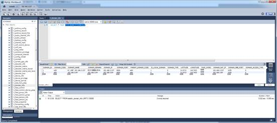
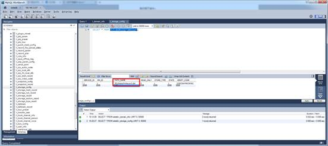

安装好流媒体服务之后，/home目录底下有以下几个目录：
linux-nxeb:/home # ls -al
total 2010512
drwxr-xr-x 1 root root 582 Jun 28 21:36 .
drwxr-xr-x 1 root root 184 Nov 30 2017 ..
-rwxr-xr-x 1 root root 17624811 Feb 21 2017 MySQL-client-advanced-5.6.24-1.sles11.x86_64.rpm
-rwxr-xr-x 1 root root 61092554 Feb 21 2017 MySQL-server-advanced-5.6.24-1.sles11.x86_64.rpm
-rwxr-xr-x 1 root root 1441857190 Mar 12 03:55 UMP_SIE_SRC_V200R004B34.zip
-rwxr-xr-x 1 root root 40745017 Jun 11 10:01 UMP_VMS_V200R004B34SP01.exe
drwxr-xr-x 1 root root 204 Jun 26 02:00 backup
drwxr-xr-x 1 root root 84 Jun 28 21:36 deploy
-rwxr-xr-x 1 root root 203923495 Nov 30 2017 deploy_basic.run
-rwxr-xr-x 1 root root 50695140 Jun 28 21:34 deploy_hms_x264_linux_x86_64.run
-rwxr-xr-x 1 root root 242812801 Jun 28 21:35 deploy_sie_sles12.run
drwxrwxrwx 1 root
root
78 Jun 25 06:44 hy_media_server
drwxrwxrwx 1 root
root
92 Jun 20 02:27 hy_meeting_server
drwxr-xr-x 1 root
root
108 Nov 24 2017
hy_via_server
drwxr-xr-x 1 lvxh users 284 Apr 13 2017 lvxh
drwxr-xr-x 1 root root 302 Jun 28 21:36 sie_bak
drwxr-xr-x 1 sqjz sqjz 936 Apr 13 2017 sqjz
linux-nxeb:/home/hy_media_server/bin # ls -al
total 28648
drwxrwxrwx 1 root root 624 Jun 28 21:49 .
drwxrwxrwx 1 root root 78 Jun 25 06:44 ..
drwxr-xr-x 1 root root 136 Jun 28 21:36 .WatchDog
-rwxrwxrwx 1 root root 2672 Jun 25 06:44 HA_CHECK.sh
-rwxrwxrwx 1 root root 6412 Jun 25 06:44 HA_COMMON.sh
-rwxrwxrwx 1 root root 3075 Jun 25 06:44 HA_HB.sh
-rwxrwxrwx 1 root root 652 Jun 25 06:44 HA_SENDHB.sh
-rwxrwxrwx 1 root root 1369 Jun 25 06:44 HA_SWITCH.sh
-rwxrwxrwx 1 root root 89128 Jun 25 06:44 alarm_manage_center
drwxrwxrwx 1 root root 44 Jun 25 06:44 boa
-rw------- 1 root root 53198848 Jun 28 21:49 core
-rwxrwxrwx 1 root root 7735648 Jun 25 06:44 disktool
-rwxrwxrwx 1 root root 155520 Jun 25 06:44 dispatch_center
-rwxrwxrwx 1 root root 1339 Jun 25 06:44 formatdisk.sh
-rwxrwxrwx 1 root root 87232 Jun 25 06:44 formatool
drwxrwxrwx 1 root root 214 Jun 25 06:44 frp
-rwxrwxrwx 1 root root 201880 Jun 25 06:44 gateway
-rwxrwxrwx 1 root root 389248 Jun 25 06:44 hydog
-rwxrwxrwx 1 root root 1448 Jun 25 06:44 imp_rec.sh
-rwxrwxrwx 1 root root 43032 Jun 25 06:44 ipDector
-rwxrwxrwx 1 root root 2668 Jun 25 06:44 ipEvoConfig.sh
-rwxrwxrwx 1 root root 61416 Jun 25 06:44 keep_alive_gateway
-rwxrwxrwx 1 root root 92912 Jun 28 21:51 licensetool
-rwxrwxrwx 1 root root 213456 Jun 25 06:44 media_node
-rwxrwxrwx 1 root root 870 Jun 25 06:44 module.sh
-rwxrwxrwx 1 root root 4300912 Jun 25 06:44 ossfs
-rwxrwxrwx 1 root root 691 Jun 28 21:36 profile.sh
-rwxrwxrwx 1 root root 17864 Jun 25 06:44 punch_server
-rwxrwxrwx 1 root root 31 Jun 25 06:44 restart.sh
-rwxrwxrwx 1 root root 182520 Jun 25 06:44 sie_server_config
-rwxrwxrwx 1 root
root 776
Jun 25 06:44 start.sh
-rwxrwxrwx 1 root root 1486 Jun 25 06:44 start_idle.sh
-rwxrwxrwx 1 root
root 976
Jun 25 06:44 stop.sh
执行命令：./stop.sh
执行命令：./start.sh
启动好media_server后，要单独启动会议服务器。执行以下命令：
/home/hy_meeting_server/bin/start.sh
linux-nxeb:/home/hy_media_server/conf # cat sdp.ini
[db]
"host"="127.0.0.1"
"user_name"="root"
"password"="Huaiye@2013**"
"db_name"="sdedb"
上下级域在表sdedb.t_domain_info中进行配置。上级域、下级域SIE各自的这张表里面的记录要对称（与ECS的conf_ent类似）。

执行如下命令：
cd /home/hy_media_server/bin/
source profile.sh
./formatdisk.sh
./formatool -s 21474836480 -b 4194304 -r 0 -p /FILEdata/HyRecord.dat
./formatool -s 21474836480
-b 4194304 -r 0 -p /FILEdata/Hymedia.dat
-s 录像存储空间大小（规则1G=1024MB，1G=1024*1024KB,1G=1024*1024*1024B），单位为B，
-b 每个块的大小,单位为B ,建议值为4M;
-p 录像存储空间的路径。
创建好录像的存储空间后，需要将录像存储空间的路径配置到数据库表sdedb.t_storage_config中：
